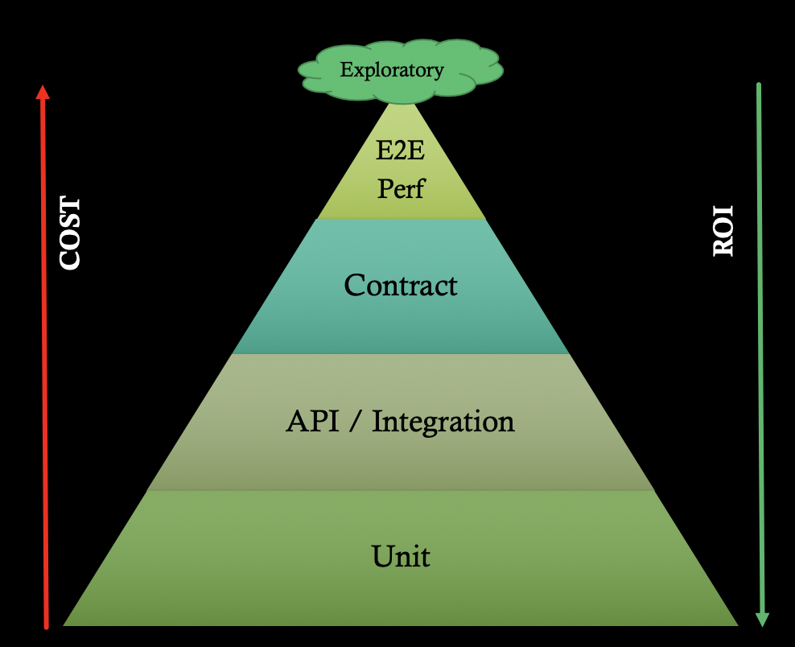

Quality Gates Supported in the RefArch1.5 CI/CD Pipeline (Medusa)¶
Medusa is the pipeline library which orchestrates RefArch 1.5 CI/CD stages. This guide captures the various quality gates/test stages that will be supported by the library.
Test Stages¶
Test Pyramid
| Test Category | Execution Stage | Required? | Purpose | Role of test doubles | Network calls guidance | Assertions |
|---|---|---|---|---|---|---|
| Unit Tests | CI / pre-deploy | Yes | Fast, low-level tests to assert on the behavior of the code i.e., every model, class/controller, functions and view, in isolation. | see section below for guidance | No network calls made | |
| Integration Tests | CI / pre-deploy | Yes | Narrow integration tests that live at the boundary of your service, to validate component integration points. The intent is to write integration tests for all pieces of code where you either serialize or de-serialize data. some examples:
|
see section below for guidance | Localhost only | |
| Consumer-driven Contract Test (CDC) | CI / pre-deploy | For producer services that expose interfaces to other services only. | Services that provide interfaces (providers/producers) fetch and run CDC tests continuously to spot any breaking changes immediately. The verifier tests are auto-generated based on contracts expressed as DSL from the consumers. |
see section below for guidance | Localhost only |
|
| Static Code Analysis | CI / pre-deploy | Yes | Code quality analysis to measure test coverage, run security scans, look for code smells, etc. Please see this yammer post for more information.
|
N/A | N/A |
|
| E2E Tests | CD / post-deploy | Yes | Reliable workflow(s) to smoke test the "ends" that the system touches i.e., downstream calls only. e.g., middle->db, ui->edge->middle->db. This is meant to be a deployment qualification test to verify the container deployment worked and the application is up and able to receive requests and communicate with its dependencies. | see section below for guidance | Can access real services/external systems, databases, file systems, etc. over the network. | AT LEAST 1, key workflows for integration with external systems are covered |
| Server-side Performance Tests | CD/ post-deploy | Required (implicit perf validation via Dark release stage during hydra deployment is an option, but will need to be validated by your system architect for viability. Also, this is not viable until refarch1.5 is live and receiving customer traffic.) |
Validate that the service is able to meet the performance goals (relative and absolute assertions against response time under load, error rate) | see section below for guidance | Can access real services/external systems, databases, file systems, etc. over the network | All key business transactions are covered to ensure compliance with perf goals as per the NFRs. |
| Client-side Performance Tests | CD/ post-deploy | Only for UX services | To opportunities around improving the end-user experience by identifying optimizations that can be applied to a UI page (mobile or desktop experience) to improve TTFB, render time, DOM load time (e.g., leveraging browser caching, enabling compression, minifying html/css, optimizing rendering experience by inlining JS or making external requests async, etc.) | see section below for guidance | Can access real services/external systems, databases, file systems, etc. over the network | All key business transactions are covered to ensure compliance with client-side perf goals as per the NFRs. |
Guidance on Writing Tests For Automated Quality Gates¶
Unit Tests¶
Use of test doubles
Aggressively mock all dependencies, including:
external service dependencies (i.e. anything that crosses a process/network boundary)
external libraries
classes/ functions in the same project
Integration Tests¶
Use of test doubles
Aim to run your external dependencies locally i.e., mock/stub dependencies not owned by the service, like:
in-process test doubles to test integration with external systems e.g., in-memory embedded databases, local MySQL database, local ext4 filesystem
out-of-process stubs to replace an external service (recommended to use the stubs published by the producer service during the contract testing stage)
Consumer-driven Contract Test (CDC)¶
Use of test doubles
The framework provides 2 frameworks to execute contract verifier tests:
For gradle/maven based spring boot services, use MockMvc framework to mock dependencies.
For all others (e.g., nodejs or .NET), use stub servers to replace calls to external dependencies if CDC tests are run in non-MVC mode (i.e., explicit-mode). These are out-of-process test-doubles that help mock external service calls using reliable stubs published from the downstream producer’s contract test stage.
Performance Tests (Server-side)¶
Use of test doubles
Recommendation is to write “narrow perf tests” to isolate measurements to service-under-test by using stubs to replace downstream dependencies. Watch this space for updates – more to come when we have examples/reference implementation for these scenarios).
JMX Test Attributes
Please refer to the Medusa guide on Performance Tests for specifications around where the tests are discovered from and more about the performanceDefinition.yaml file.
The
TestPropertiessection in the performanceDefinition file helps define the attributes of the jmeter test (jmxtest plan) when Medusa orchestrates the test as an automated quality gate during the CD-phase of the pipeline.In order for these properties to take effect, a matching JMeter property (referenced using
${__P(duration,60)}in test plan, and passed into the command-line invokation of the jmx file using-Jargument) should be present in the test plan.e.g., if
durationis provided under theTestPropertiessection, thejmxtest plan should implement and use the-Jdurationproperty.
Recommendations for performance tests in the pipeline:
Provide
durationin theTestPropertiessection, to limit the tests to a fixed duration.Minimum duration should be at least >1 minute (i.e., 2x the prometheus scrape interval, which defaults to 30s), and maximum duration should be well under the <15 minutes to stay within the
hydratimeout setting for test jobs.Recommended duration for tests is 5-10 minutes i.e., 300 seconds - 600 seconds.
Provide
throughput,threads,rampup(optional) attributes in thejmxtest plan to help drive the load levels (rpsorrequests per second) for your tests.Recommendation is to use steady load (throughput) during these tests, instead of variable load since these are short-duration tests and variability in load levels can lead to inconsistent measurements on aggregate calculations of response time.
Ramp up/down can be used, but the validation currently does not offset these windows from calculating 95th percentile response time. This will be a future enhancement added to the platform (tentatively in PI14).
The
Constant Throughput Timerelement can be used to throttle/vary the request rates for theHTTP Requestelements in the test plan. When this is applied at theThread Grouplevel it applies to allHTTP Requestelements under that group, but you could use the timer within anHTTP Requestelement to apply a variable rate and override the parent-rate for specific requests within a thread group.
Performance Tests (Client-side)¶
Recommendation is to follow this reference implementation from EA: platform.infrastructure.docker-lighthouse.
E2E Tests¶
Typically, no test doubles/mocking recommended. The purpose of these tests is to test integration with external services, persistence, startup logic, authentication workflows, network configuration and remote request/response routing with dependencies.
For UX svcs: Validate limited user-critical workflows, to test integration with downstream dependencies. Model tests around users of the system and the journeys those users make through the system (business cases).
As an exception, mocking could be considered for async back-end processes and other flaky external services that might be part of the e2e workflow for the service. Refer guidance from Martin Fowler “If a particular external service or GUI is a major cause of flakiness in the test suite, it can help to redefine the test boundary to exclude the component. In this case, total end-to-end coverage is traded in favour of reliability in the suite. This is acceptable as long as other forms of testing verify the flaky component using different means.”
Please see this page for more guidance around e2e tests: E2E Testing for Microservices